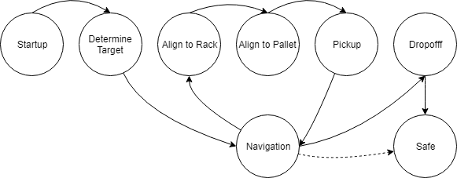

Autonomous Forklift
University of Colorado - Mechatronics
January 2019 - May 2019

Mechatronics was one of my favorite courses at university. After some basic electronics lectures, we spent most of the semester building autonomous forklifts capable of navigating a mock warehouse, retrieving pallets, and delivering them to any of multiple drop-off zones all while avoiding obstacles including human workers and other autonomous vehicles. We were challenged to develop and prototype software, electrical, and mechanical systems and to integrate those systems into a functional product in only a few weeks.

We began with an acrylic chassis, a DC motor drivetrain, and two line followers. An arduino used the line followers and a motor driver to steer the robot along aisles. The second subsystem added a raspberry pi and a webcam to navigate intersections via QR codes. We used Dijkstra’s algorithm to navigate the warehouse, treating each intersection as a node. Finally we attached the gripper assembly, built from a 3D printed fork, a camera for pallet alignment, a modified 3D printer gantry, and an arduino to control it all. The gripper assembly was my primary responsibility. Challenges included lense distortion on the alignment camera, having to disable and re-enable line followers for pallet alignment, and ensuring pallet retension.
In the end we were successful in achieving each of the project's goals: to navigate the warehouse without hitting obstacles, to collect any pallet assigned, and to deliver that pallet to any drop-off location.